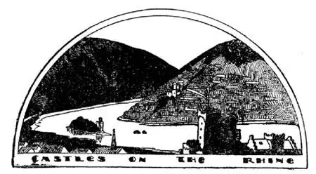
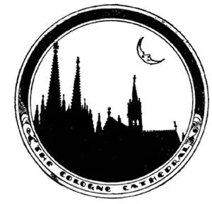

38
Wars and Fairy-Tales
战争和童话故事

Though Italian is the language of music, the people of Germany are quite as musical as the Italians. But their music is very different from the music of the Italians. Some of their music is warlike, big and loud, and yet some of it is gentle and sweet, and the most famous cradle songs and Christmas carols have been written by Germans. “Silent Night, Holy Night” is one. Musical plays are called operas. Some of the greatest operas in the World have been composed by Germans.
Cradle songs and Christmas carols don’t seem to go well with fighting. But the Germans, besides being very musical, have also been very warlike. You have all heard of the two terrible World Wars, World War I and World War II. Most of the countries of the World took part in these two wars. In each war Germany fought almost all the other countries in the World and, even with almost all the rest of the World against her, she nearly won both times.
After World War II the countries that had beaten Germany divided Germany up to keep her from starting any more wars. Russia took Eastern Germany. The United States, Great Britain, and France ruled Western Germany. So there came to be two Germanies, West Germany and East Germany.
Some of the World’s best fairy-tales come from Germany
世界上最好的一些童话故事是来自德国的
Which do you like better, fairy-tales or true stories? Some of the World’s best fairy-tales have been made in Germany. Stories, poems, songs, and operas have been written about fairy people and real people who once lived on the hills and in the caves by the side of a river in Germany called the Rhine. The Rhine starts from a glacier in the Swiss Alps and runs north along the west side of Germany and through Holland.
On both sides of the Rhine are steep hills and rocks and on top of these hills are castles built many years ago. The men who built these castles were called robber barons, and they built their castles on these hills so that they could rob and would be safe from their enemies. The poor people, who lived down in the valleys, had to give part of the things they raised to the barons; if they did not do so, the barons would swoop down on them with their men and take what they wanted and destroy the people’s homes. The people knew it was useless to attack the barons because of their strong castles. Most of these castles are now in ruins, because it is too hard to get to them and to keep them in repair, and no longer can any one treat the poor people the way the barons did.
Cologne is a kind of strong perfume. It is named for a city on the Rhine called Cologne. Cologne means colony, for it was once a colony of Rome. The house in which I live took seven months to build, but there is a Cathedral in Cologne that took seven hundred years to build!—the longest time of any building in the World.

Robbers once lived in these castles
强盗们曾经居住在这些城堡里

It took seven hundred years to build Cologne Cathedral
建造科隆大教堂花了七百年时间
Cologne is a city famous for its Cathedral but the most famous German city is Berlin Before World War II Berlin was one of the finest and cleanest cities in the world. It had broad tree-lined avenues, great handsome stone buildings, parks and statues. It was also the capital of Germany. But by the time World War II was over, much of Berlin was a wreck. Many of its finest buildings were in ruins, destroyed by bombs dropped from airplanes during the war. Berlin is in Eastern Germany, the part of Germany ruled by the Russians after the War, but the United States, Great Britain, and France as well as Russia govern Berlin. The Russians had fought on our side during World War II, but after the War was over they became very unfriendly to the United States and Great Britain. They even said that the countries ruling Western Germany could not use the railroad or auto roads to Berlin. The people of Berlin had to be fed, so the United States and Great Britain flew tons and tons of food and coal into the city by airplanes day after day for a year and a half. Finally the Russians realized they could not keep out the Americans and British and opened the railroad again. This carrying of supplies to Berlin was called the Berlin Airlift because the supplies were lifted through the air from Western Germany to Berlin.
Sticking up off the map of Germany like a thumb is a little country called Denmark. On one side of it is the North Sea; on the other side is another sea called the Baltic. Germany fronts on the North Sea and on the Baltic Sea too, but this little thumb of land does not belong to Germany. The Germans had to go all around this country in order to get from the cities on the North Sea to the cities on the Baltic Sea, so they cut off the thumb by digging a canal across the bottom of it. It is called the Kiel Canal.
【中文阅读】
尽管意大利语是音乐的语言，德国这个民族像意大利人一样喜爱音乐。但德国音乐与意大利音乐截然不同，有些德国音乐让人联想到战争场面，气势宏大，声音响亮，而有些则柔和甜美。最著名的摇篮曲和圣诞颂歌都是德国人谱写的，《平安夜》就是其中之一。音乐剧被称为歌剧，世界上最伟大的一些歌剧也是由德国人创作的。
摇篮曲和圣诞颂歌似乎很难与战争联系起来。但是，德国人，除了喜爱音乐之外，还非常好战。你们都听说过两次可怕的世界大战，第一次世界大战和第二次世界大战。世界上的大多数国家都参加了这两次大战。在每次大战中，德国几乎与其他所有参战国开战，甚至全世界没有参战的国家都把德国看成敌 人。德国差一点赢了两次大战。
第二次世界大战之后，那些打败德国的国家将德国分而治之，防止它再挑起战争。俄罗斯占领了德国东部，美国、英国和法国统治了德国西部，这样就出现了两个德国——东德和西德。
童话故事和真实故事，哪一个你更喜欢？世界上最好的一些童话故事就是在德国创作的。德国人写了许多故事、诗歌、歌曲和歌剧，描述童话里的人物，也描述了曾经生活在德国莱茵河畔的山上和洞穴里的真实的人物。莱茵河发源于瑞士阿尔卑斯山脉的冰川，沿着德国西侧向北流淌，流经荷兰。
莱茵河两岸都是陡峭的山坡和岩石，在这些山顶上有很久以前建造的城堡。修建这些城堡的人被称为强盗贵族。他们在山上修建城堡既便于抢劫，又能避开敌人的攻击。住在山谷里的穷人不得不将自己种植的一部分东西送给这些强盗贵族。否则，这些强盗贵族就会率众从山上冲向他们，任意抢夺东西，再毁掉他们的房子。穷人们知道反击这些贵族是没用的，因为他们有坚固的城堡。现在，这些城堡大部分已经成为废墟，因为很难再到城堡对它们进行维修，此外，也不再有人能像那些强盗贵族那样虐待穷人了。
科隆香水是一种气味浓烈的香水，它是以莱茵河畔的一座叫科隆的城市来命名的。“科隆”的意思是“殖民地”，因为它曾是古罗马的殖民地。我居住的房子花了七个月的时间修建好，但是在科隆，有一个大教堂却花了七百年的时间才完工——是世界上建造时间最长的建筑物。
科隆是以大教堂而闻名的城市，而德国最著名的城市是柏林。第二次世界大战之前，柏林是世界上最美丽、最干净的城市之一。有宽阔的、绿树成荫的街道，漂亮的石头房屋、公园，还有雕像。柏林也是德国的首都。但是到第二次世界大战结束的时候，柏林的大部分地方都被毁了。多数最漂亮的建筑物被战时飞机投下的炸弹炸毁了，成了一片废墟。柏林位于德国东部，而德国的这部分战后由俄罗斯统治。但是，美国、英国，还有法国和俄罗斯一起掌管柏林。“二战”期间，俄罗斯是站在美国一方的，可战争结束后，俄罗斯对美国和英国非常不友好。他们甚至说，统治德国西部的国家不可以使用通往柏林的铁路和公路。但是柏林人极需要生活援助，于是，美国和英国不得不每天用飞机将成吨成吨的食物和煤空运到柏林，这种情况维持了一年半的时间。最后俄罗斯意识到很难将美国人和英国人挡在柏林城外，就重新开放了通往柏林的铁路。这种提供生活物资的方式被称作“柏林空运”，因为物资是通过飞机从德国西部运到柏林的。
伸出德国地图像拇指一样的小国家是丹麦。在丹麦的一边是北海，另一边是波罗的海。德国也面向北海和波罗的海，但拇指般小的这块地并不属于德国。德国人从北海岸边的城市到波罗的海的海滨城市去，不得不绕过丹麦这个国家，为此他们就将大拇指切断，在它的底部挖了一条运河。人们称之为基尔运河。